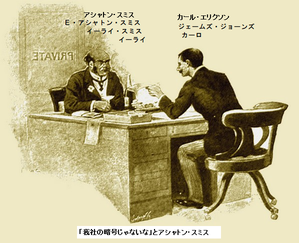
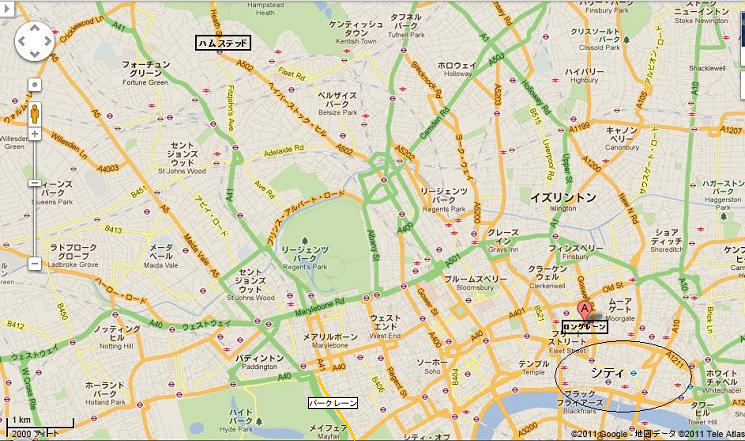
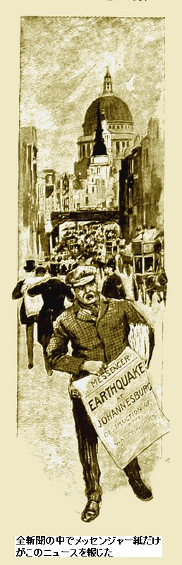
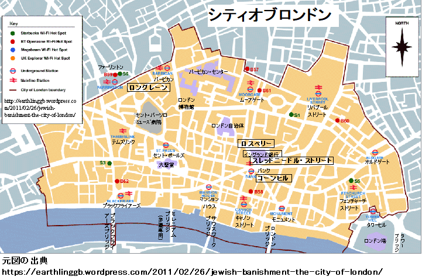
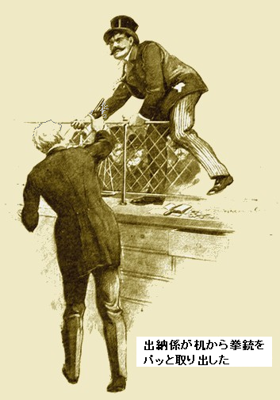
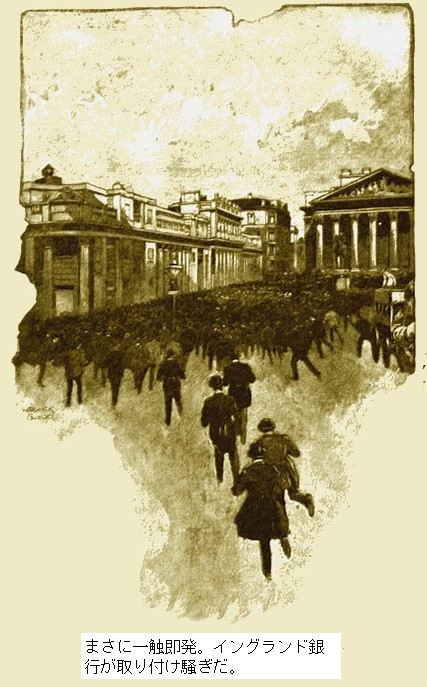

［＃ページの左右中央］
いかにして証券取引所を恐慌に落とし、帝国の命運を二日間撹乱させたか
［＃改ページ］
一九〇六年、平和な時代が順調に始まったようで、当然、特徴は活発な商業・経済活動になる。世界的投機の激しさといったら、どの時代もかなわず、南海
英国銀行に積みあがった数兆ポンドは利率二・五パーセント、惜しげもなく引き出され、新しい鉱山が開発され、誰もが儲けようとしていた。表面上、人々の楽観的な期待には優良な地盤があった。
七〇キロ平方の南アフリカ・ランド地区には高品位の金鉱脈があり、計り知れない

言い換えればすさまじいブームだ。こんな現象は商業史上どこにも見られない。起業家の夢の時代であった。今なお大部分は計画が充分保障されていた。
しかしながら市場にはガセネタも多数あった。慎重な資本家の中には真っ先に危険に感づくものもいたが、聞く耳を持たなかった。コーサ族のドラムが耳にこびりついて、みな狂ってしまった。おそらくパークレーンの人々は新興成金を決して受け入れないだろう。
英国全体が熱狂に浮かれた。真の投資や事業が、単なるばくちと化した。ロンドンはそれ以外考えない。シティには興奮した
＊
忙しい一日が終わろうとしていた。カール・エリクソンが自分の事務所に座って煙草を吸っている。エリクソンは昨日までしがない食堂の給仕係だった。今日ハムステッドにひとかどの事務所と小さな自宅を手に入れた。多くの間抜け同様、つられての上京だった。暗い顔つきにぎこちない笑みがあり、唇が変に引きつり、目が疲れて眠そうだ。
共同出資者が葉巻をくわえて向かい側に座っている。太っちょで、あごが張り、口元が薄情だ。六か月前イーライ・スミスは郊外の大繁盛肉屋だった。今はＥ・アシャトン・スミスと名乗り、大口の資金提供者となった。実際自慢げに、四万ポンド小切手に署名しても痛くもかゆくもないとか。シティ
「大きなカードを切るのか、え？」
とアシャトン・スミスが
エリクソンは神経質そうに笑った。細身で小柄な体が興奮して震えている。たれ目が
エリクソンがゴホゴホむせながら、
「最強の札だ。世紀の作戦だぜ。イーライ、どれくらい稼げると思うかい？ 南ア株を一週間で五、六ポイント落とせたら」
アシャトン・スミスのダイヤモンドが興奮して揺れた。
「何百万ポンドだ。全くそれだけあればよろめきかねないな。考えるだけで口がカラカラだ。早速シャンパンを開けろ」
エリクソンがシャンパンを開けて、椅子から立ち上がり、外側の事務所をのぞいた。事務員たちはその日全員帰宅していた。扉をそっと閉めて言った。
「計画を話そう。誰かに言わないと狂いそうだ。考えると夜も眠れない。うとうとしているときも金貨の川で寝ているよ。ちょっと運があれば確実だぜ」
「続けろよ、カーロ。ひとの気持ちをもてあそぶんじゃない」
エリクソンが声を落とし、ささやくように、
「ああ、こんな方法だ。二本の電信線が南アと世界とをつないでいる。つまり東と西のアフリカ電信線だ。西海岸線は信頼性が劣り、一週間に少なくとも一回切れる。こんなご時世に切れたら大事だ。お偉いさん達は難局に必死だから、現時、西海岸線は論外だ。修理中や、長いこと切れたままになりやすい。いま確認したら、西線を使って南アと通信できない。次の二週間、西ルートでは何も送受信できない。だからみんな東線だけが頼りだ。もしこの東線が運よく二十四時間切れたら、我々の成功は確実だぜ」
「そうなりそうか？」
とアシャトン・スミスが訊いた。
「もちろんだぜ。今年は三回起こった。この事故を相当しつこく追っかけていたんだ。カードより確率がいい。仮にだ、電信線が切れたとして、イーライ、最後の電文が手に入ったら？ これを見ろ」
エリクソンが金庫から一枚の紙を取り出した。電文だ。実際に東アフリカ会社から送られている。本物の文書だ。日付と時間を見ると、同日の午後ケープタウンから発信されている。電文は次の通り。
『バーサは叔母を失くし、水をマッチ箱に詰めた』
「我社の暗号じゃないな」
とアシャトン・スミス。

「そうだぜ。メッセンジャー新聞社の暗号だ。同紙はタイムズ紙と並ぶ高級紙だ。もしあした同紙に、『ランド地区に地震が発生し、ヨハネスブルグ浄水場の水があふれ、大洪水になった』という記事が載ったら、誰もが絶対正しいと思い込む。だからメッセンジャー新聞社の暗号を必死で研究して手に入れたんだ。低確率の東線断線に賭けて、南アにいる友達から毎日電文を送ってもらっている。こういう内容だ。『ヨハネスブルグで地震発生、鉱山が冠水』この内容をメッセンジャー新聞社が使っている暗号で送ってもらっている。あのちんぷんかんぷん電文の意味だよ。バーサとか、水とか、マッチ箱とか。仮にメッセンジャー新聞社に行き、東線が切れたと言ったとしよう。西線は修理中だから、南アとの交信は一日かもっと不可能だ。たぶん西線は一週間近く回復しないだろう。俺は東線会社が通信に使う封筒を一、二枚持っているから、くだんの電文を中に入れて、宛名を俺の登録名ボナンからボナンザに変える。ボナンザはメッセンジャー新聞社の登録電信宛名だ。二文字添えると、どうだ。これが目的で、ロングレーンの小さな鉱山事務所をボナンと登録して、そこでは自分をジェームズ・ジョーンズと称しているんだ。この計画を何年間も温めていた。配達小僧がメッセンジャー新聞社に電報を運び、手渡す。すると、どうだ。完全に手順に従ってるし、大新聞社専用の暗号だし、なにより最新だ。もし電信線が断線していれば問い合わせはできない。そのまま新聞に載る。この為だけに毎日同じ電文を自分に送りつけていたから、早晩、チャンスは来るぜ」

アシャトン・スミスが深呼吸した。見込みは魅惑的だ。
誰かが扉を叩いている。毛皮のコートを着た大男がはいってきた。
「貧乏人どもが何をたくらんでいる？ 何か特別な情報を掴んだのか。いやはや、俺は専用電信に何がしか払ってんだぞ。俺たちは一、二日休むぜ。東アフリカ線がモーリシャスの南で切れちまった」
侵入者の男は勝手にシャンパンを一杯飲んだ。言うまでもなくやけ酒だ。そしてまたふらふら出て行った。両人は黙って目くばせした。ちょっとひやっとした。
＊
ことは絶対確実なようだ。見る限り、作り話は完全に信用される。なぜならメッセンジャー新聞の信頼度は絶対だからだ。
見事な計画が最終段階を迎えた。ランド地区はめったに地震がないが、起こらないという根拠はない。地震は確実にヨハネスブルグの浄水場を破壊する。そうなれば地域の半分は冠水し、地下にある優良金鉱のいくつかは水没する。
西海岸線は修理中で、使えない。しょっちゅうだから南アに関心のある人々はほとんど承知済みだ。オーストラリアやニューヨーク経由で本当のことがロンドンに漏れる恐れはない。そしていま東線も壊れてしまった。深海ケーブルは、なべて時たまそうなる。
エリクソンが声を震わせながら言った。
「どうだい。どこにもぬかりはないぜ。もしも東線が朝までに修理されたら、ただじゃ済まされない。奇襲計画は失敗する。取り調べを受けて、ジェームズ・ジョーンズは二度とロングレーンに戻れない」
＊
アシャトン・スミスは帰宅して、夕食を取り、酒を飲んだが、その晩は寝付けなかった。翌朝、新聞が遅れ、イライラは解消されなかった。朝食には手をつけず、ただトーストを少々、ブランデーとソーダ水を少し飲んだ。しばし金持ちアシャトン・スミスが懐かしんだ日々は、かつての脂まみれでいいかげんな肉屋イーライ・スミスだった。
新聞がやっと到着した。どさっと来たけど、アシャトン・スミスはメッセンジャー新聞だけ見たかった。震える指でめくった。あった、探していたニュースだ。ほーっと息を吐いた。
通常メッセンジャー新聞は扇情記事など書かないが、今回は「特ダネ」だ。人間ならではの編集長が阻止できなかった。見出しが読者の前に踊っていた。
『ヨハネスブルグ地震』
『浄水場破壊』
『鉱山水没』
『生命と財産大損害』
全新聞の中でメッセンジャー紙だけがこのニュースを報じた。『浄水場破壊』
『鉱山水没』
『生命と財産大損害』

ヨハネスブルグの地図を見ると、浄水場から八キロ・右方向地帯に、世界的に名高い鉱山があり、この作り話はさらに信ぴょう性を増した。洪水は市街の高慢ちきなヨハネスブルグから、金鉱地帯まで襲う。後者に金の成る鉱山がある。
ここに何億ポンドも投資している。災害ニュースは証券取引所の資産を目減りさせる。弱気の投資家は確実にうろたえ、市場で株がどっと売りに出かねない。アシャトン・スミスは来たるべき時機を考えて身震いした。
十時ちょっと過ぎ、シティに到着。列車や通りでも人々は南アの大災害のことばかり。メッセンジャー新聞だけに載っていたが、誰もこの話を疑っていない。不運にもこの重大な時に東線は断線し、詳細が当分来ない。最後に通じていたのがメッセンジャー新聞の電信線だった。
＊
「抜かりはないか、ええ？ 順調か、ええ？」
と
エリクソンがうなずき、笑った。顔面蒼白で不安げだ。
「仕掛けの開始だぜ。株価が五、六ポイント下がったら、粛々と買うぞ。いいかい、俺はこそこそしないつもりだ。市場の救世主として振る舞う。パニックに屈しない男ってわけだ。地震が束になってかかって来ても立ち向かう男だ。底値で買い支えるぜ。うっかり秘密が漏れても疑惑をそらせるし、金持ちになれる。そしてキミは俺を支えてくれ。ほんとのことが分かったとき、どんな騒ぎになるやら」
エリクソンと共同経営者は、通りすがりの詮索好きな観客の振りを演じ通した。失うものは何も無い。そして、奇妙な光景を楽しんだ。羽振りの良い裕福な人物を装う男、その凶悪な風貌には嘘っぱちの雰囲気が漂っていた。
誰もが追い詰められ、警戒した。いつも市場を牛耳っている大資本家たちがだんだん恐れだした。パニックなど起こるはずはないと勝手に思い、災害規模を確かめるまで何もすべきじゃないと望んだ。
だが人々はメッセンジャー新聞をまともに信じた。同紙はいままで嘘をついたことがない。こうなると、取引所や市場の大物たちも人間性を喪失。乏しい人道そっちのけで強欲やら、自己保身やら、金の亡者をめざし、
コーンヒルの歩道に二人の巨頭の名前が記されている。両者の名前は取引所で有名、相当な高額を扱う。両人は裕福で、何不自由ないと自他共に認めている。だが、市況の圧力が二人の神経に障り始めた。
「ここへ来るまで数時間で五万ポンドを損したかも、ヘンダーソン」
と片方が言った。
「私はその二倍失いかねない、きのうは持っていたんだがね。君はどうしたいんだい、キングスリイ？」
とジェームズ・ヘンダーソン卿が尋ねた。
大物
「皆を通りから追い払え。軍隊とマキシム銃を投入し、シティに四十八時間非常事態を宣言しろ。議会制定短期法案を通し、証券と株式の売買を一週間停止しろ。そのころになればパニックは自然におさまるだろうし、人々も正気を取り戻す。現実に何千人も破産しかかっている。南ア株はどれもばかばかしいほど投げ売りされている。たとえ災害が小規模でも株価は底ばいする。もっと悪いことが起こるよ、君」
もうある種の株がガクンと落ちたという噂がパーっと広まった。きのう大衆評価の高かった鉱山株が、公然と八から一〇ポイント下落した。優良株もさえない。
安全株はないという気配が強まった。お金しか関心のない大衆を揺さぶるのはとても簡単なことだった。一斉にシティの何千人もの大小投機家たちが、出来るだけ早く重荷を処分しようとした。儲けは問わず、利ざやも求めなかった。ただ損失から抜け出したい一心だった。
何百万人もの頭に同じ考えが同時に浮かぶとは誰も思わなかった。一斉に投げ売り、三分の一は破産したに違いない。
しばらくは豪胆な投機家たちが買い支えたが、やがて目いっぱいになったり怖くなったりして、二時ごろになると優良株の中には一ポンド株が数シリングで売られる始末。これがニューヨーク市場に飛び火してロンドン市場に跳ね返った時、何が起こるか誰も分からない。
幸いしたのは売り手が同時に大量売り出来なかったことだ。電報の束が株屋に押し寄せ、床は茶封筒でとっ散らかり、シティは電話の呼び出し音が鳴り響いた。株屋の社長は心配と不安で半狂乱になりながら、電話交換台に女性を大勢さし向け、あちこちの顧客とつないだ。いつもは分別のあるシティはいまや、かつての南海泡沫事件さながらとなった。
しかしながら三時ごろ証券取引所の仕事は事実上停止した。紙くずを取引しても意味がない。明日になれば何千人のも野暮な相場師が押しかけることは疑いない。すでに外国証券取引所も圧力に苦しみつつあった。後場の寄り付き、噂が流れ、ロスベリーで過熱の兆しがあった。

いま何が起こってるんだ？ 人々は耳をそばだてた。やがて分かった。南ア興業銀行が取り付け騒ぎを起こしている。
南ア興業銀行の入り口で群衆が騒ぎ始めた時、支配人が裏口からそっと抜け出て、イングランド銀行へ急行した。そこで冷静さをすっかり失ってしまった。辺りかまわず、
だがイングランド銀行は、ほかのことに気を取られていた。国中の情報によればパニックが最高潮に達しているとのこと。このときほど大資本家たちが痛感したのは、なんとまあ、ギャンブル大金が熱狂的に南ア株につぎ込まれていることか。誰もが金持ちになろうとしている。質素な事務員から貧乏貴族までもだ。洗いざらいかき集めた金が、流れ込んでいた。
そうしていまこの国はランド地区を失ったと思いこんだ。東電信会社に何とかしてくれと激しく詰め寄ったが、同社の答えはモーリシャスのどこかで断線しており、吊りあげてから接合するまで、南アは月明かり状態だとか。人々はランド地区がすっかり水没したかのように反応した。
イングランド銀行には途方に暮れた大資本家たちが集まり、パニックを沈め、大衆の信用を回復しようとしていた。名門のロスチャイルドやクーツその他が頭取室に会した。
南ア興業銀行の支配人がやっと会議にたどりついた。ご迷惑を皆に
一人の謹厳な資本家が大声で笑った。厳粛・礼節な頭取室で笑うとは
議長が言った。
「差し当たり五十万ポンド融資しよう。残りは必ず追加する。駆け引き上手になれ。急がば回れだよ」
「まともに銀行を開け続けたら、いつまで……」
「バカな。御社の規定に従え。四時に閉めろ。遅れたらことだぞ」
頭取室の大時計が四時を打った。長引いた苦悩が突如消失したかのようだった。
南ア興業銀行の支配人は会社へ帰る道すがら、胸の奥にちょっぴり希望を持った。
社に帰ると小康状態だ。これを利用しよう。いまや勇気リンリン。きっぱり言った。
「扉を閉めろ。四時を過ぎた」
群衆が抗議して叫んだ。一人の大男がカウンターの格子によじ登った。一瞬無法者の暴徒に見えた。

支配人が極めて冷静に、
「今日は閉めます。お金を今すぐ全部下ろそうと思い込んで、一晩中ここにいても無駄です。あす来なさい。全額お支払いします」
怒号が起こった。支配人が事務員の一人に何事かささやくと、事務員はスッと出て行った。やがて入口で大騒ぎ。六個のヘルメットが群衆に襲いかかった。人波がザーッと動き、長いカウンターにギューギュー詰めにされた。号令を一声二声発し、
次の数分間、取っ組み合いの様相だ。めくら滅法に殴りあって、数人が顔から血を流している。だが、法と秩序を後ろ盾にする武力がいつも強い。次第に群衆は後退し始めた。だんだん
でもシティは晴れなかった。最悪のうわさが流れた。ほかの銀行も大なり小なり払い戻し業務を行っており、南ア興業銀行のひそみに
夜の八時になっても通りにはなお、人があふれていた。かなり暖かかった。夕暮れ後、交通はほとんどない。何千人もの人々が暗黙に同じことをしようとしたことは明らかだ。
つまり目当ての銀行や会社の前に一晩中留まり、朝一番のチャンスを待つ。人々は通路や道路に座りこんだ。シティのどの飲食店もそれ以来、食材が空っぽになった。
大きな電球の下に人々が横たわり、夕刊を読んでいる。大いなるピクニック、悲劇の饗応だ。笑うものなく、強固な意思を秘めるばかり。
新聞は各地からの悪いニュースが一杯だ。どこでも大衆の信用は限界点まで落ちた。地方銀行も多数取り付け騒ぎがあった。
＊
ウエストエンドではただの話題になるぐらいだった。劇場やレストランが営業しており、生活はいつもの通り変わりない。
サボイホテルの個室で、エリクソンと共同経営者が後ろめたそうに夕食している。ウエイターがいなくなり、ワインと煙草がテーブルに置いてある。
両人には和らいだ表情があったが、眼には狡猾な光があり、両手はだらんとしているけれど、シャンパンの為じゃない。長い
「とても温かい日だな、イーライ」
とエリクソンが誘い水。
アシャトン・スミスが汗ばんだ赤い額を拭いた。
「キミほど敏感じゃない。しかし、これで儲けるために数千ポンド失ったぞ」
エリクソンはバカな共同経営者をいつものように軽蔑しなかった。
「何が言いたいんだ」
とエリクソンがぶつぶつ。
「ああ、やり過ぎだぞ。ゲームが長すぎる。株がわずか数ポイント下がったとき買って、戻し値を狙った。我々は有り金をかき集める限りつぎ込んで、値上がりに賭けた。それでどうなった？ 十万株が平均より数ポイント下がったって？ とんでもねえ。こんなパニックがあと二日続けば、有り金すべてとクレジットを、何トンという紙くずに交換しなければならん」
「また値戻りするさ」
とエリクソンが不安げに言った。
「えっ、いつだ？ 大衆には脅しがきつ過ぎたんだ。やつらの恐怖はここ数日収まらないぞ。嘘の事故を知らせた。そしたら、株の投げ売りというざまだ。数ポイントの下落なら我々の懐に何百万ポンド転がり込んだかもしれない。ところが現実は何カ月も塩漬けしなければならん。そんなことをする余裕はないぞ」
しばらく間をおいて、エリクソンがしわがれ声で、
「あした電信が復活すれば……」
「ああ、でもしなかったら？ もし続いたらどうなる？ それにあしたイングランド銀行が取り付け騒ぎにでもなったら」
「考えもつかなかったぜ。ブランデンーをくれ。あしたが土曜日だったらなあ、木曜日じゃなくて。ひどい暗黒木曜日になりそうだぜ」
エリクソンとアシャトン・スミスはブランデーをちびちび飲んでいたが、もはや、ぎらつくまなこでほくそ笑むことはなく、とらぬ狸の札束を数えることもできなかった。欲深い狐のように獲物を物陰に隠した。獲物と共に腐っていく。
不機嫌な
「タレこみはできないなあ」
とエリクソンがほのめかした。
アシャトン・スミスが鼻白んだ。
「タレこみだと！ お前は賢い奴だが、度が過ぎる。それしか考えられないんだったら、黙ってろ。市長の所へ行って話したいのだろう？」
エリクソンが咄嗟に切り返し、アシャトンをしらけさせた。
「だれもこんな事態は予測できないぜ。最悪なことに我々は一言もしゃべれない。ちょっとでもしゃべろうものなら疑惑を招き、確実に刑罰を受ける。ただ、にこっと笑って耐えるのみだ」
アシャトン・スミスがエリクソンの顔をめがけてこぶしを振った。
「貴様は最低の詐欺師だ。お前がいなけりゃ、俺は今日金持ちになっていたのに。いま破産だ、破産だ」
エリクソンは頭を卑屈に下げ、ひと言も言わなかった。
＊
翌朝、シティはいつもより早く起きた。完全に一睡もしなかった。朝九時、通りは人でぎっしり。徹夜で
地方列車が早朝からロンドンに新しい活力を注ぎ始めた。大多数の経営者たちは自社でせいぜい眠った。朝、現場にいた方が一番確実と判断したためだ。疲労
押し黙り、断固たる決意の大衆。小突き合いとか、バカ騒ぎとか、そのたぐいはない。神出鬼没のひょうきん者すらいない。粛々と歩みを進め、大勢の群衆が大銀行を取り囲んだ。シャッターが上がり、扉が開くや、人間の洪水がどっと流れ込んだ。
銀行の取り付け騒ぎが容赦なく始まった。各地の支店から事務員と
バタバタと処理し、お金を払い戻す作業の確実さと言ったら、効果がないわけではない。多数の行員が札束を手に持って確認し、後ろから渡して、窓口で払い戻した。あちこちで損したと人々が嘆いている。
この時こそ手癖の悪い連中の書き入れ時であった。人ごみにうまく隠れ、大手を振って荒稼ぎできる。ひとえに目星をつけるのはお金持ちの獲物。何人かが「スられた」と、大声を上げたが、誰も気にしない。
体のがっしりした赤ら顔の農夫がイングランド銀行紙幣を八百ポンドすられたと大声を上げた。そばの誰かが言い返したセリフ、そんなの大したこたぁない。見れば、大国立銀行が取り付け騒ぎ。

まさに一触即発。イングランド銀行が取り付け騒ぎだ。でも新情勢を
群衆の中には何も関係のない野次馬が何千人といた。その日、ロンドンでいわゆる仕事があった為じゃない。スレッドニードル・ストリート方向にどっと押し寄せた。後世の語り草として、イングランド銀行の取り付け騒ぎを見たとなろう。
払い戻し部門には金貨・銀貨の巨大な山が陽光に輝いていた。奇妙でぞくぞくする光景だ。謹厳で礼儀正しい銀行員と、必死の形相で殺到する大衆は余りにも対照的だった。
大量に積まれた金貨と、当局の落ち着きぶりに、窓口へ押しかけた善良な人々は安心し、ぶつぶつ言って戻って行った。しかし本当の所、銀行の支配人はだんだん不安になっていた。
フェアチャイルド卿は大資本家、世界各地の大都市に邸宅を所有、たまらず銀行の頭取室にやって来た。会長や頭取が議論の真っ最中だった。楽観的な意見が支配していた。
議長が心配気に言った。
「嵐を乗り切れたらほんとにいいのですが。誰からも危険情報はありませんが、終息してほしいですなあ」
みんな疲れ果てているようだ。頭取の一人か二人が椅子で寝込んだ。テーブルには昼食が散らかっている。だが集まった誰も何も欲しくないみたいだ。
フェアチャイルド卿が言った。
「もう一日続くと思う。あすまでにケープタウンともう一度連絡を取らねば」
この目的を達成するためにあらゆる努力が払われた。たぶん断線はいつか修理されるだろう。断線が吊りあげられたとモーリシャスから連絡があったが、深夜以降これ以上の情報はない。たぶん、回線が復活したら、最後の電文予想よりはるかに被害は少ないとわかるだろう。
一人の頭取がため息をついた。
「もうすぐだよ、もうすぐだ。でなきゃ議会がこの問題を処理しなければならなくなる。あと二日……」
フェアチャイルド卿が応じた。
「あと二日はないだろう。もし最悪になれば、政府は英国銀行紙幣を保障しなければならなくなる。政府債権を発行して不足額を埋め合わせなければならない。我々は……」
一人の興奮した男がノックもせずに部屋に乱入してきた。帽子がとれ、高級外套がずたずたに裂けている。
息も絶え絶えに言った。
「私は東電信会社のもので……、直ちにこちらへ行くように命じられ……、閣下、驚くべきニュース……、ヨハネスブルグの大災害は……」
「続けろ、みんなじれている」
「あ……ありません。確認しました。ケープタウンの代理店の話では何も聞いてないと。ヨハネスブルグは元のままです。四通受信しました。もう重大な詐欺です。全力で真相を調査中です」
歓喜の声が
フェアチャイルド卿が、押し合いへし合いの大広間にやってきた。台上に立ったその姿は細身で見事、ひときわ目についた。そこにいた何百人も高貴な姿に見とれた。
フェアチャイルド卿が大声で宣言した
「皆さん、ただいま最も信頼できる情報がありました。ヨハネスブルグはこんにち無傷です。どこかでだまされたのです。だが、ありがたい、パニックは終わりました」
ドッと歓声が沸き起こった。人々は喜びのあまり半狂乱。フェアチャイルド卿の言葉なら絶対信じられる。帽子を放り上げ、赤の他人同士で握手した。みんな金貨を戻し、代わりに紙幣を受け取った。
ニュースは磁力のように広がり、大多数の耳に届いた。通りを雷光速度で走った。誰もが魔法のように知ったのはフェアチャイルド卿が短い演説をイングランド銀行で行い、脅威が終わったということだ。
一〇分も経たずして、各銀行当局は今しがた払い出した金貨の山を、再び収納する作業に大わらわ。群衆が愛国歌を怒鳴り、四方八方へどっと繰り出した。
次の一時間かそこらで、電信が情報を大量に打ち出した。一時間以内でシティはいつもの忙しさを取り戻した。ただ、人々は長蛇の列を作って金貨を再び厄介払いしようと銀行に戻した。
投機筋によるさらなる搾取と、経済不安定化を防ぐ目的で、証券取引所委員会が会合し、取引所を公式に月曜まで閉鎖した。このような環境ではきわめて真っ当な手順だ。
銀行応接間の離れではフェアチャイルド卿がメッセンジャー新聞社の編集長と
編集長がおもむろに言った。
「閣下、おわびの言葉もございませんが、あの……」
フェアチャイルド卿がおもんばかった。
「お詫びする必要はありませんよ。あなたが被害者なことは充分承知してますから。でもどうやって？」
メッセンジャー新聞社の編集長が答えた。
「いまなら理由が言えます。ご承知のように我々のような大新聞社は各地に通信員がいます。もちろん弊社専用の特殊暗号を使います。ケープタウンの通信員はとても信頼できます。
ところが現在、弊社の暗号を盗んだか、カギを持っているものがいます。電信は弊社登録のボナンザ宛てに来ます。それが我々に届いたのがあの日、東線が断線した日の電文です。
見ると、全く規則通りで、そのまま通常の方法で配達されて、採用され、感じとしては特ダネ、おそらく他紙はつかんでないという印象でした。電報の外観は一切おかしな所はありませんでした。
しかし偽のニュースが素通りしたことから専門家に調査させました。報告によれば元の電報あて先はボナンでありボナンザではないとのことです。最後の二文字が巧妙に偽造されています。しかし強力な虫眼鏡で見ると改ざんは明らかです。
ここに
そして万が一東線が切れた時、電報を弊社へ送りつけることができるようにするためです。残念ながら、その電報が弊社へ送られて、ひどい結果になりました。あの電文が電信断線を狙って、毎日毎日繰り返し送られていることを突き止めました。
さて、大勢の商社が毎日受信するのは南ア相場や、価格表や、砂金の発見などです。これらはすべて暗号です。おそらく二週間、何の変動もなかったということは、数日間、実質同じ電文を受け取っていることになります。
記録を詳細に調査しない限り、疑惑を
シティは再び正常に戻った。四時には事実上引けた。各銀行の事務所は払い戻された金貨があふれんばかり。行員たちは帳簿を閉じて、夜の安息を楽しみに待っている。
数時間まえの同じ通りだとはとうてい信じられない。
一方、エリクソンと共同経営者は自社の部屋で、莫大な数列にほくそ笑んでいた。二人が大衆に大ぼらを吹いてだました儲けは何百万ポンドにも上っていた。
事態が突然回りだして大喜びしながら、二人の犯罪者が不正蓄財で砂上の
二人はびくっとした。両人の神経は過日の昼夜のストレスでまだピリピリしていた。
「どうぞ」
と言ったアシャトン・スミスは落ち着きがない。
男が二人、入室。一人が手に紙を持っている。
「アシャトン・スミスさん、カール・エリクソンさん別名ジェームズ・ジョーンズ、両人に逮捕状が出ました。いま読みあげます。二人には黙秘権があります。共犯者のジェイコブ・ピーターズがケープタウンで逮捕され、完全自白したと電信連絡がありました」
エリクソンが悪態をついた。
消え入りそうなかすれ声だった。
「万事休すだ。チャンスだったのに。くそピーターズ、臆病なバカめが。奴がいなけりゃ、五千万ポンド稼ぐはずだったのに」
了